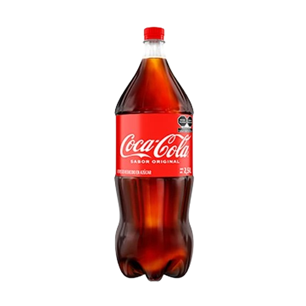
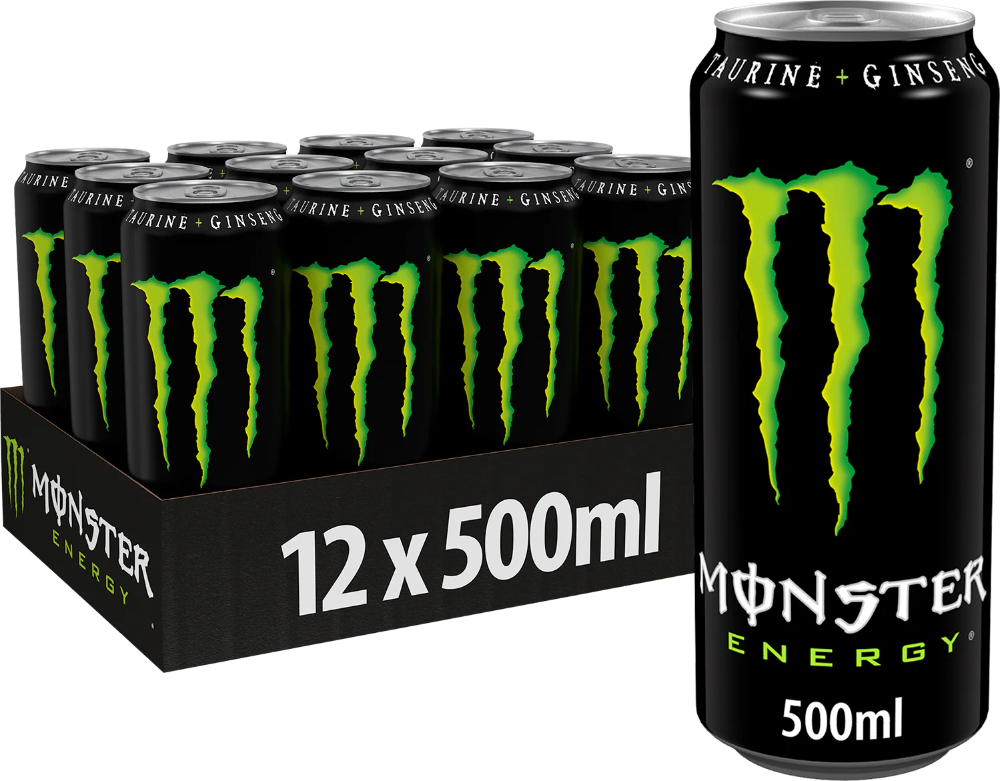

Proyecto que busca implementar una solución de automatización para tres líneas de producción de una planta de fabricación y distribución de bebidas
Las líneas de producción de la planta manejan tres tipos de bebidas, las cuales son:

Descripción del producto 1
Descripción producto 2

Descripción producto 3